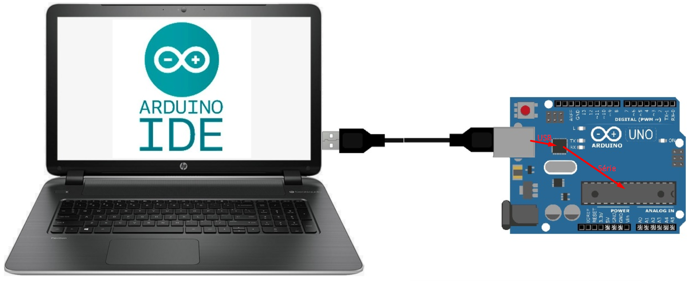

C'est quoi Arduino ?
Introduction
Arduino est une plate-forme open-source de développement électronique qui comprend à la fois du matériel et du logiciel. Elle est conçue pour permettre aux amateurs, aux concepteurs et aux ingénieurs de créer facilement des projets interactifs.
Avec Arduino, les utilisateurs peuvent contrôler des lumières, des moteurs, des capteurs et d'autres composants électroniques pour réaliser une variété de projets, allant de simples gadgets à des systèmes plus complexes.
La partie matériel comprend des cartes équipées de micro-contrôleurs et d'un connecteur USB qui permet de les connecter à un port USB du PC pour téléverser (upload) les programmes dans le Microcontrôleur. Chaque carte possède des connecteurs permettant d'accéder facilement aux E/S du Microcontrôleur.
La partie logiciel consiste en un environnement de développement intégré (IDE) pour écrire et télécharger du CodeArea, ainsi qu'une large communauté en ligne offrant des ressources et un support.
Une fois programmée, une carte Arduino peut fonctionner d'une façon autonome ce qui en fait l'outil idéal pour la réalisation de systèmes embarqués
Il existe plusieurs variantes plus au moins évoluées de cartes Arduino (Uno, Nano, Mega, Due, mini, micro ...). La suite de ce tuto est basée sur la carte Arduino Uno
Arduino UNO
- Processeur: ATmega328
- 32ko de mémoire programme (flash)
- 2ko de mémoire de données (SRAM)
- Horloge 16 Mhz
Le processeur ATmega328 est le cœur de l'Arduino Uno. C'est un microcontrôleur à faible consommation d'énergie anciennement fabriqué par Atmel Corporation qui a été reprise par Microchip Technology
C'est là que sera stocké le programme Lorsque vous téléversez votre CodeArea sur la carte Arduino. Cette mémoire est non volatile, ce qui signifie qu'elle conserve le programme même lorsque l'alimentation est coupée.
La RAM (Random Access Memory) est utilisée pour le stockage temporaire des données pendant l'exécution du programme. C'est là que les variables sont stockées pendant que le programme s'exécute. Contrairement à la mémoire flash, la RAM est volatile, ce qui signifie qu'elle perd les données lors de la mise hors tension de l'Arduino. La quantité de RAM disponible détermine la complexité des programmes que l'Arduino peut exécuter et la quantité de données qu'il peut traiter.
L'horloge définit la vitesse avec la quelle les instruction du programme seront exécutées. Un cycle horloge = 1/16Mhz = 62.5ns. Une instruction simple comme la somme de 2 octets prend 62.5ns, tandis que des instructions plus complexes comme les opérations sur les nombres flottants ou les opérations de boucle peuvent prendre plusieurs cycles d'horloge.
- 14 E/S numériques (pattes 0,1,...,13)
- Les 14 pattes peuvent fonctionner en E/S numériques simples
- Les pattes 3,5,6,9,10,11 peuvent fonctionner en sorties PWM
- les pattes 0, 1 peuvent fonctionner en bus de communication série
- les pattes 10,11,12,13 peuvent fonctionner en bus de communication SPI
- 6 entrées Analogiques (A0,A1,A2,A3, A4,A5)
- Les 6 peuvent fonctionner en entrées analogiques pour mesurer des tensions analogiques dans l'intervalle [0V, 5V]
- Les 6 peuvent aussi servir en E/S numériques, ce qui fait qu'en réalité, nous avons 20 broches qui peuvent fonctionner en E/S numériques, (ce qui n'est pas toujours précisé dans la doc officielle)
- les pattes A4 et A5 peuvent fonctionner en bus de communication I2C (Two Wires)
- Limitation de courant sur les E/S
- Le courant max recommandée sur une sortie Arduino est 20mA. En aucun cas il ne doit dépasser 40mA
- Le courant max que toutes les sorties réunies peuvent fournir ne doit pas dépasser 200mA
- Le courant max que toutes les sorties réunies peuvent recevoir ne doit pas dépasser 400mA
Alimentation du Arduino UNO
La carte Arduino UNO peut être alimentée de plusieurs manières
- La manière la plus courante et la plus simple d'alimenter une carte Arduino est d'utiliser son connecteur USB intégré. Le connecteur USB fournit une ligne régulée de 5V provenant du PC pour alimenter l'électronique de la carte.
- Connecter une alimentation continue comprise entre 7V et 12V sur la prise Jack. Cette tension est appliquée a un régulateur de tension à travers une diode de protection contre l'inversion de polarité. Le régulateur délivre le 5V nécessaire l'alimentation de l'électronique de la carte. Le 5V est lui même appliqué à un deuxième régulateur qui fournit une tension de 3.3V
- Connecter une alimentation continue comprise entre 7V et 12V sur La broche Vin. Cette tension est appliquée directement à l'entrée du régulateur 5V. Il faut être prudent car on n'a pas de protection contre l'inversion de polarité
- La broche 5V du Arduino est normalement une sortie 5V. Mais on peut si aucune autre source d'alimentation n'est disponible y connecter une alimentation continue de 5V. Cette solution est à utiliser en dernier recourt et avec prudence car, du fait qu'elle est directement reliée à la sortie du régulateur, elle n'offre aucune protection contre les surtensions et l'inversion de polarité.
La sortie 5V du Arduino UNO
La sortie 5V du Arduino est très pratique car on peut s'en servir pour alimenter des modules du projet sans être obligé d'utiliser une autre source d'alimentation. Cela peur réduire l'encombrement du projet.
Cependant, il faut rester vigilant car cette sortie ne peut pas fournir un courant trop important.
- Si la carte Arduino UNO est alimentée par le cable USB du PC, il faut se rappeler qu'un port USB 2.0 peut fournir jusqu'à 500 mA, tandis qu'un port USB 3.0 et ultérieurs peut fournir jusqu'à 900 mA. Il faut aussi tenir compte que la carte elle-même consomme du courant pour fonctionner. On ne peut donc pas détourner tout le courant du port USB vers la sortie 5V
- Si la carte Arduino UNO est alimentée par une alimentation [7V-12V] sur la prise Jack ou sur l'entrée Vin, alors l'alimentation 5V est fournie par le régulateur présent sur la carte. Normalement ce régulateur peut fournir jusqu'à 800mA pour alimenter la totalité de la carte et fournir du courant à la sortie 5V. Il est donc très fortement conseillé de pas dépasser un courant de 400 à 500 mA sur la sortie 5V
La sortie 3.3V du Arduino UNO
La sortie 3.3V du Arduino est très pratique car on peut s'en servir pour alimenter des modules 3.3V du projet sans être obligé d'utiliser une autre source d'alimentation. Cela peur réduire l'encombrement du projet.
La tension 3.3V est générée par un régulateur 3.3V présent sur la carte Arduino. Le régulateur 3,3V est connecté à la sortie du régulateur 5V. Tirer du courant du régulateur 3,3V dissipera de la chaleur à la fois dans le régulateur 3,3V et dans le régulateur 5V. Cela signifie que si vous connectez un dispositif 3,3V à la broche 3,3V, alors cela limite également le courant maximal que vous pouvez utiliser pour les modules 5V.
En général, il est recommandé de ne pas dépasser 100 à 150 mA sur la sortie 3.3V pour assurer un fonctionnement stable de la carte
Le bouton RESET
Le bouton RESET permet de réinitialiser la carte et redémarrer le programme qui se trouve dans la mémoire flash
L'interface USB-Série
Le téléversement du CodeArea du PC vers l'Arduino se fait à travers le cable USB. Cependant, le processeur ATmega328 ne prend pas en charge nativement l'USB, il a uniquement une UART (Universal Asynchronous Receiver Transmitter) qui assure la communication série. C'est pourquoi la carte Arduino intègre un circuit d'interface USB-Série qui assure la conversion entre le protocole USB et le protocole série. Dès que la carte Arduino est connectée au port USB du PC, Windows détecte le circuit d'interface et utilise son driver qui fait apparaître le port USB comme un port série de type COM

Il suffit d'ouvrir le gestionnaire de périphériques pour voir le numéro de port COM que Windows a octroyé à la carte Arduino
C'est ce port qu'il faut préciser dans l'environnement de développement Arduino IDE pour qu'il puisse communiquer avec la carte Arduino
L'environnement de développement
L'Arduino IDE (Integrated Development Environment) est un logiciel open-source conçu pour faciliter le développement de projets sur les plateformes Arduino. Il offre une interface conviviale permettant de rédiger, compiler et téléverser du CodeArea sur les cartes Arduino. L'IDE utilise une syntaxe simplifiée du langage C/C++. De plus, il offre une vaste bibliothèque de fonctions préprogrammées pour simplifier le processus de développement.
Arduino IDE peut être téléchargé depuis le site officiel dans la rubrique SOFTWARE. A l'heure où j'écris ces lignes, la dernière version est la 2.3.2. Personnellement, je préfère la version (legacy) 1.8.19, je la trouve plus rapide, et elle affiche le moniteur série dans une fenêtre séparée ce qui est plus pratique
Configuration de L'IDE
- Choisir un dossier pour vos programmes:
- Cette étape est importante, si vous ne la faites pas, vous allez vous retrouver avec des programmes qui traînent un peu partout dans votre disque dur et vous aurez beaucoup de mal à les retrouver
- Utiliser l'explorateur Windows et créer un dossier avec le nom et l'emplacement qui vous conviennent,
- Dans l'IDE Arduino: fichier → préférences → Sélectionnez votre dossier dans le cadre Emplacement du carnet de croquis → OK,
- Définir le type de carte:
- outils → type de carte → sélectionner votre carte dans la liste,
- Définir le port COM de communication avec l'Arduino:
- Brancher votre carte Arduino sur un port USB, Windows va lui affecter un port COM. Vous pouvez le voir dans le gestionnaire de périphériques
- outils → port → sélectionner le port COM. Si vous avez plusieurs port COM et vous ne savez pas lequel est le bon, le mieux est d'aller dans le gestionnaire de périphériques, débrancher/rebrancher la carte et voir quel est le COM qui disparaît/réapparaît.
Premier programme
On va essayer le petit code qui fait clignoter la LED intégrée sur la carte Arduino. On peut trouver ce programme dans les exemples de Arduino IDE (file -> exemples), je vous conseille plutôt de suivre les étapes ci dessous, vous aurez ainsi votre propre version du programme que vous pouvez modifier à votre guis:
- Brancher une carte Arduino sur un port USB
- Démarrer Arduino IDE
- Dans le menu 'outils' choisir la carte et le port
- Commencer un nouveau programme: fichier -> New sketch
- Copier/Coller dedans le programme ci-dessous
- Sauvegarder avec un nom parlant, par exemple: LED_blink
- Téléverser le programme dans la mémoire flash de l'ATmega
- Observer la LED L présente sur la carte
- modifier la valeur du 'delay' et re-téléverser
/*
Clignoter la LED intégrée sur Arduino
*/
// fonction de configuration
void setup() {
pinMode(LED_BUILTIN, OUTPUT); // configurer la broche 13 en sortie
}
// corp du programme qui se répète en boucle
void loop() {
digitalWrite(LED_BUILTIN, HIGH); // allumer la LED
delay(500); // attendre 500ms = 1/2 s
digitalWrite(LED_BUILTIN, LOW); // éteindre la LED
delay(500); // attendre 500ms = 1/2 s
}
Le Moniteur Série
Le moniteur Série est une console ou un terminal qui permet de :
- Visualiser des informations envoyées par l'Arduino
- Envoyer des commandes ou des données vers l'Arduino
Un terminal n'est pas un ordinateur, c'est juste un écran et un clavier dotés d'un module de communication série
Les terminaux étaient très utilisés dans les années 70-80 avant l'arrivé des ordinateurs personnels (PC). On utilisaient plusieurs terminaux pour travailler sur un seul grand ordinateur (mainframe). Aujourd'hui, il ya un tas de petits logiciels émulateurs gratuits (Tera Term, PuTTY, ...) qui transforment un PC en terminal.
L'environnement de développement Arduino-IDE dispose de son propre émulateur de terminal, c'est le moniteur série. Il partage le port série avec le module qui permet de téléverser les programmes dans la mémoire flash de l'Arduino.
Le Moniteur Série n'a pa la même allure sur la version 2.3.x et la version 1.8.x
Sur la version 2.3.x, le Moniteur série s'affiche en bas de la fenêtre, on ne peut pas le détacher
Sur la version 1.8.x, Le moniteur série s'affiche dans une fenêtre séparée, je trouve que c'est plus intéressant